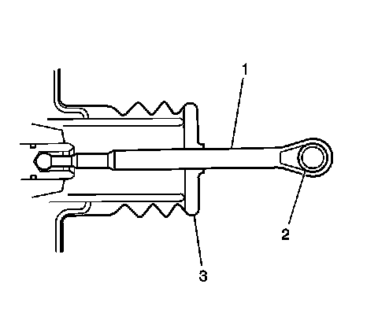

Brake Pedal Pushrod Inspection
Brake Pedal Pushrod Inspection

1. Disconnect the brake pedal pushrod (1) from the brake pedal.
2. Inspect the brake pedal pushrod eyelet bushing (2), if equipped, for cracks and/or excessive wear.
3. Reposition the pedal pushrod boot (3) toward the front of the vehicle to expose as much of the pedal pushrod (1) as possible.
4. Inspect the brake pedal pushrod (1) for straightness.
5. If the brake pedal pushrod eyelet bushing (2) exhibited cracks and/or excessive wear, then the bushing requires replacement.
6. If the brake pedal pushrod (1) is not straight, then the pushrod requires replacement.
7. Return the pedal pushrod boot (3) to its original position on the pedal pushrod (1).
8. Connect the brake pedal pushrod (1) to the brake pedal.